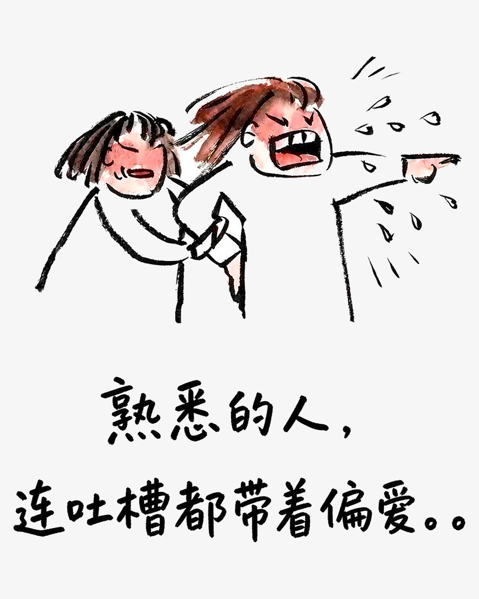
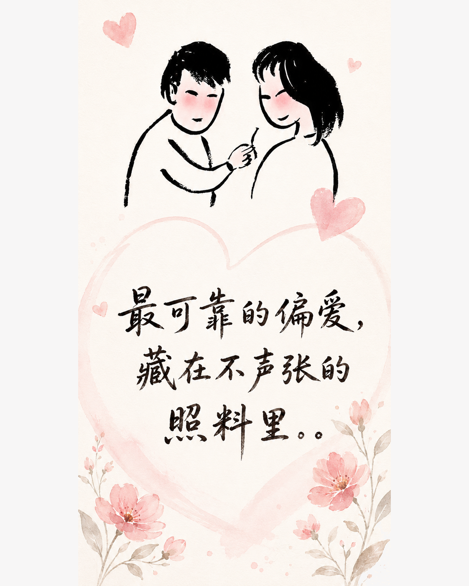
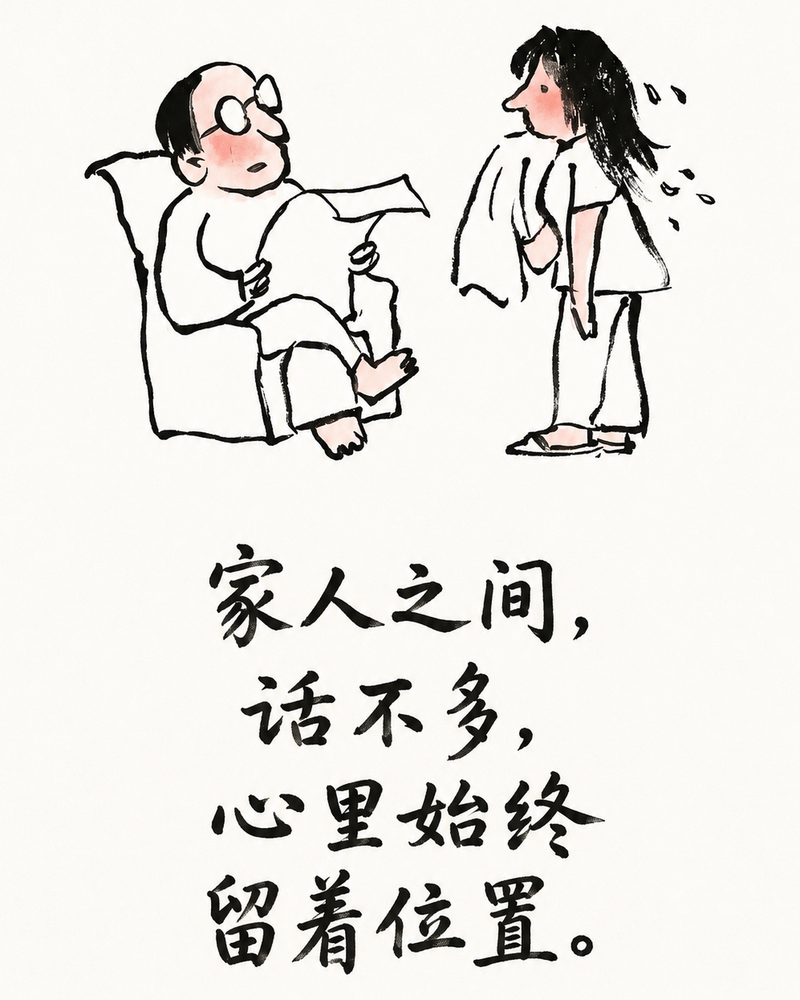

真正亲近的人，爱都藏在那些小事里
有些关系并不擅长说漂亮话，却总在你需要时默默伸手。朋友、伴侣和家人，表达爱意的方式各不相同，心意却一样真。
朋友：嘴上嫌弃，行动总比你快
真正的朋友，常常把“麻烦”说得很重，却从没在关键时刻退后。你临时出差，她一边抱怨一边照看宠物；你搬家累得直喊不干了，她下次还是会带着工具赶来。你手头紧时，她愿意先替你顶一顶，还故意用玩笑让你别有压力。朋友之间未必事事对等，却总有人记得在你需要时出现。

恋人：不说情话，也把照顾做到底
亲密关系里的关心，很多时候没有仪式感。你深夜喊饿，他嘴上数落你，手里却提着热食赶来；你情绪低落，他未必会安慰，只是把热水、饭菜和家务一样样安排好。两个人可以互相打趣，也可以坦然提出请求，因为知道对方不会把这些需要当成负担。爱不是永远温柔，而是愿意持续参与彼此的日常。

家人：争几句嘴，牵挂一辈子
家人之间最不客气，也最舍不得计较。父母会念你不够勤快，却记得你爱吃什么；他们遇到小麻烦先来找你，转身又把能给的都塞回来。兄弟姐妹可以把借还说得明明白白，真正落到生活里，却总愿意多替对方想一步。那些看似琐碎的唠叨、帮忙和惦念，才是家一直在的证据。

把被爱，认出来
值得珍惜的关系，不一定天天把想念挂在嘴边，却会在细节里给你回应。有人替你分担，有人陪你收拾残局，有人和你吵完仍然记得关灯。愿我们既能遇见这样的同路人，也别忘了用同样的认真，回应身边的爱。